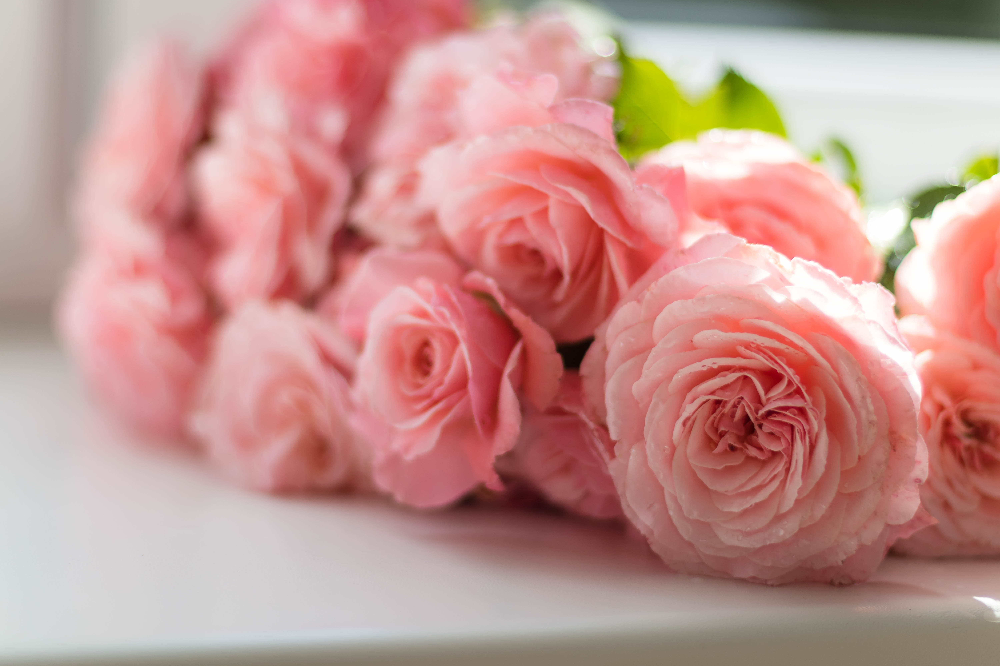
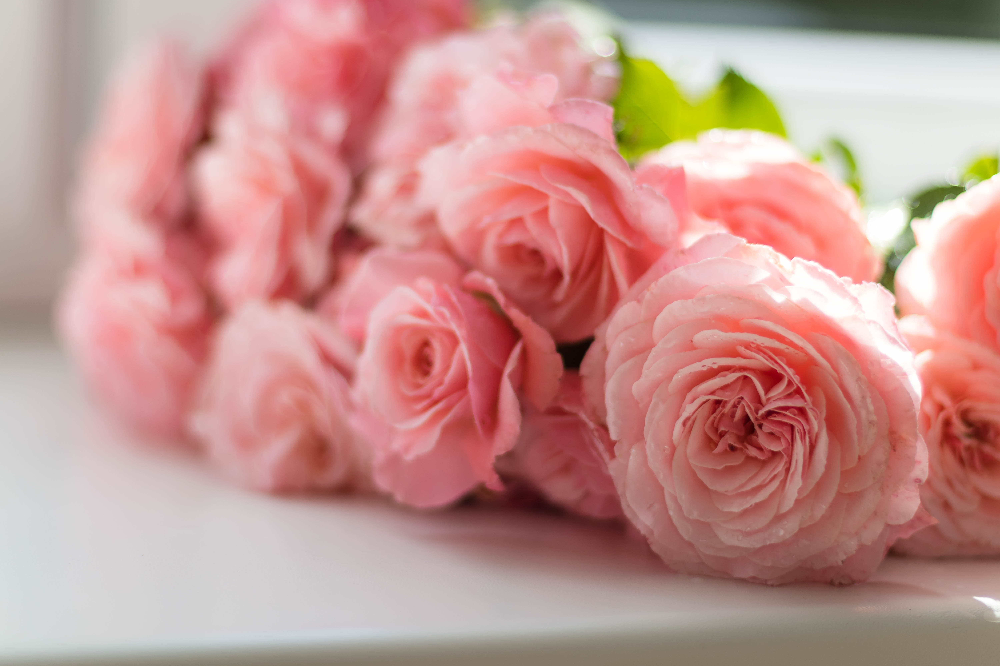
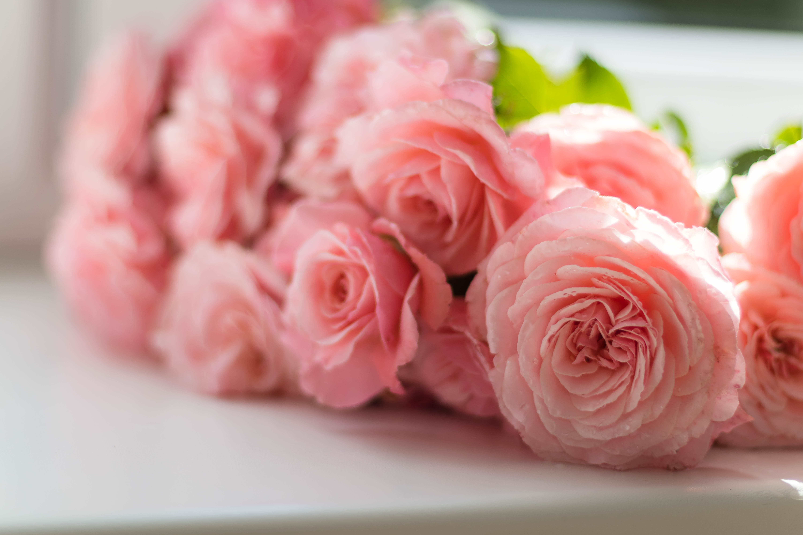

There are dozens of different varieties. They are usually described as early,second early and main crop.
There are dozens of different varieties. They are usually described as early,second early and main crop.
There are dozens of different varieties. They are usually described as early,second early and main crop.
There are twenty types of different potatoes.
There are dozens of different varieties. They are usually described as early,second early and main crop.
There are dozens of different varieties. They are usually described as early,second early and main crop.
There are dozens of different varieties. They are usually described as early,second early and main crop.
There are dozens of different varieties. They are usually described as early,second early and main crop.

There are dozens of different varieties. They are usually described as early,second early and main crop.
primary color
primary darker
primary lighter
secondary
Orange flower
Summer time! More Information


Have a good day!